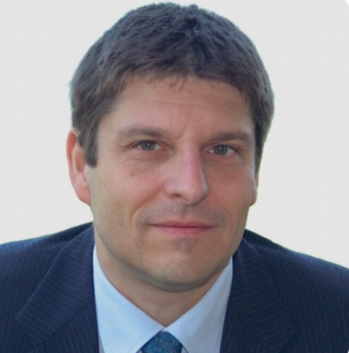
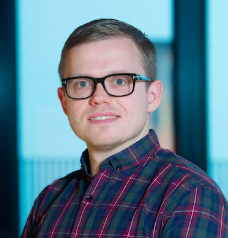
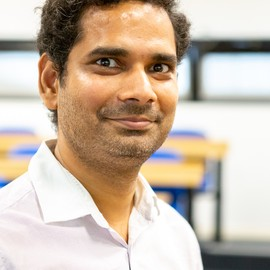
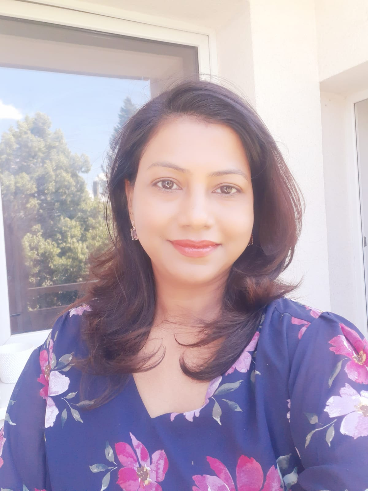
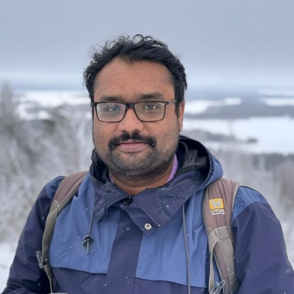
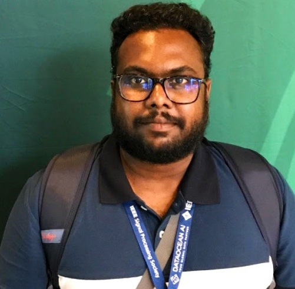
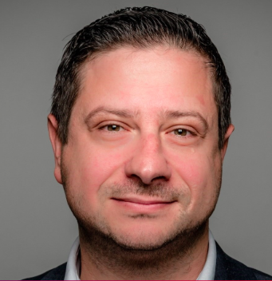
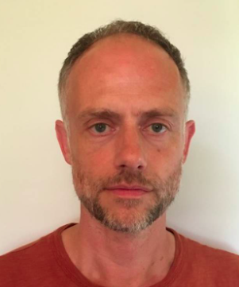

Co-located with EMNLP 2026 • Full-Day Workshop • October 29, 2026
IMPACT-SPEECH is a full-day workshop focused on identifying, measuring, preventing, and assessing bias in speech-enabled large language models and multimodal speech systems.
Co-located with EMNLP 2026 • Full-Day Workshop • October 29, 2026
SpeechLLM has accelerated the shift in human–computer interaction from predominantly text-based systems to speech-enabled and multimodal interfaces. These technologies are increasingly embedded in everyday applications, enabling more natural and accessible forms of interaction. However, this rapid progress has outpaced our understanding of the limitations, biases, and broader societal consequences of such systems. These systems have been shown to exhibit and even amplify biases related to accent, speaker identity, gender, socioeconomic status, and other factors. Such biases can lead to unequal performance, exclusion of certain user groups, and unintended harms in real-world applications. Despite growing research efforts across natural language processing, speech processing, and machine learning, work on bias remains fragmented, with limited integration across modalities and disciplines.
The IMPACT-SPEECH workshop aims to bring together researchers, practitioners, developers, and end-users from diverse fields, including speech processing, natural language processing, machine learning, social sciences, fairness, and ethics, to address these challenges. The workshop seeks to foster collaboration and build a coherent research agenda around bias in Speech LLMs. Through interdisciplinary exchange, the workshop aims to advance methods for identifying, measuring, preventing, and assessing the consequences of bias, while examining the real-world consequences of these systems, particularly in terms of fairness, accessibility, ethical responsibility, and societal impacts.
The important dates are as follows:
All deadlines are Anywhere on Earth (AoE).
The increasing use of Speech Large Language Models raises fundamental questions about fairness, inclusiveness, and trustworthiness. This talk presents research conducted within the ELOQUENCE project, which aims to develop multilingual, context-aware, and bias-controlled conversational AI for applications ranging from customer service and smart homes to safety-critical scenarios. We will focus on inequalities in multilingual and low-resource speech processing, where differences in data availability, language coverage, accents, and speaker characteristics can lead to significant performance disparities. The talk will discuss approaches to identify and measure speech bias, as well as strategies to improve robustness and inclusiveness through cross-lingual adaptation, data-efficient learning, and privacy-preserving approaches.
Bias in speech systems is often attributed to the models themselves, but it can be introduced long before training begins. In this talk, I will use speech enhancement as a case study, focusing on one such example: the "clean" references used for training are, in practice, often noisy. Drawing on our recent research, we will see how this can bias models to let noise pass through while still scoring well on objective metrics. We will also examine current evaluation practices, showing that common metrics struggle to differentiate between state-of-the-art methods and often fail to reflect the preferences and perception of real users.
The same accepted poster papers will be presented during Poster Session 2.

Senior Researcher
Fondazione Bruno Kessler

Associate Professor
Aalborg University

University of Essex, UK

JKU Linz, Austria

University of Eastern Finland, Finland

Fraunhofer IIS, Germany

University of Essex, UK

QMUL, UK & JSI, Slovenia
Mohd Mujtaba Akhtar – IIIT Delhi, India
Iqra Ali – Queen Mary University of London, UK
Sudhansu Bala Das – University of Galway, Ireland
Daniel Hershcovich – University of Copenhagen, Denmark
Senja Pollak – Jožef Stefan Institute, Slovenia
Orchid Chetia Phukan – IIIT Delhi, India
Subhankar Roy – University of Bergamo, Italy
Markus Schedl – Johannes Kepler University Linz, Austria
Divya Sharma – IIIT Delhi, India
Shah Nawaz – Johannes Kepler University Linz, Austria
Venktesh V – Stockholm, Sweden
Sarenne Wallbridge – UK AI Security Institute, UK
Tariq Yousef – University of Southern Denmark, Denmark
Eva Szekely – KTH Royal Institute of Technology, Sweden
Juntao Yu – Queen Mary University of London, UK
Reyhaneh Hashempour – QA Ltd, UK
Girish – IIIT Delhi, India
Tharindu Ranasinghe – Lancaster University, UK
Tariq Rahim – Kingston University London, UK
Abhirama Subramanyam – MBZUAI Abu Dhabi
Kalluri Shareef Babu – Manipal Institute of Technology Bengaluru
Giovanni Filomeno – JKU Linz, Austria
Shekhar Nayak – University of Groningen, Netherlands
Nina Hosseini-Kivanani – Radio Télévision Luxembourg (RTL), Luxembourg
Badr M. Abdullah – Saarland University, Germany
Shammur Absar Chowdhury – Qatar Computing Research Institute (QCRI), Qatar
Lorenzo Concina – Fondazione Bruno Kessler (FBK), Italy
Spyretta Leivaditi – University of Groningen, Netherlands
Ludovica Pannitto – University of Bologna, Italy
Esaú Villatoro Tello – Idiap Research Institute, Switzerland
Sergio Burdisso – Idiap Research Institute, Switzerland
Santosh Kesiraju – Brno University of Technology, Czechia
Fernando López – Telefónica Innovación Digital, Spain
Alessio Brutti – Fondazione Bruno Kessler (FBK), Italy
Bo Su – Indiana University Bloomington, USA